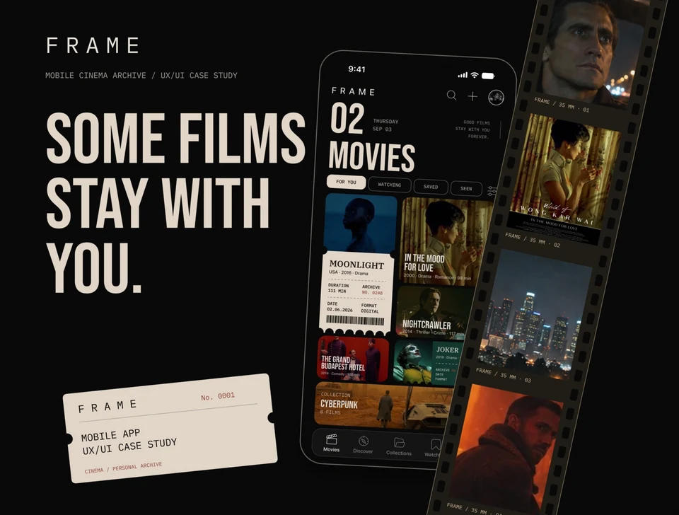
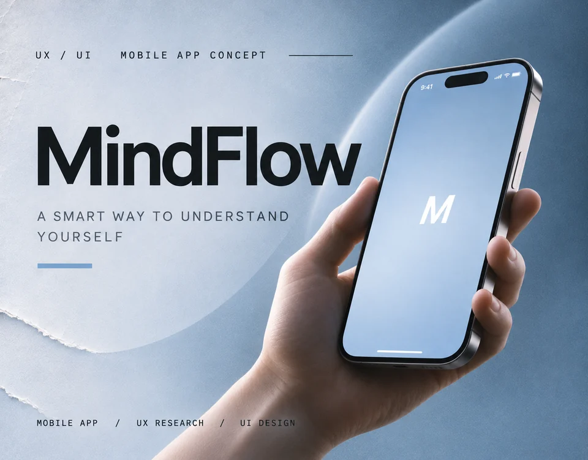

учебные проекты / веб и мобильные интерфейсы
проекты.
в каждом кейсе — задача, основные сценарии, визуальные решения и готовые экраны.

after
мобильное приложение / учебный проект
от выбора события до готового плана на вечер.

unfold
веб-платформа / учебный проект
выставки, художники и собственная коллекция искусства.

frame
мобильное приложение / учебный проект
поиск кино по настроению и личный архив просмотров.

mindflow
мобильное приложение / учебный проект
дневник и наблюдения о повседневной жизни.